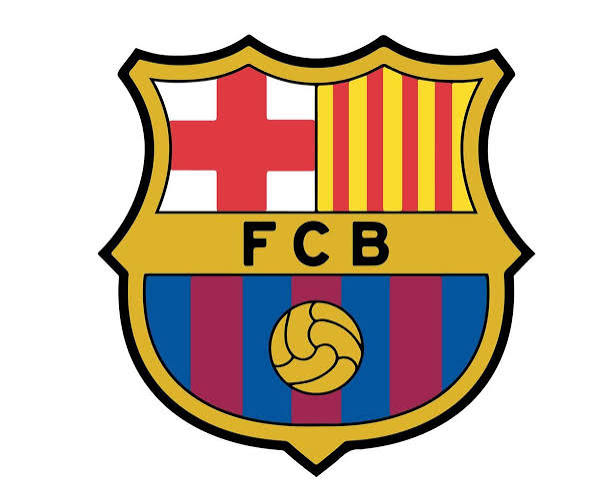

Conheça a Historia doFutebol Clube Barcelona
O Futbol Club Barcelona foi fundado em 29 de novembro de 1899 por um grupo de doze entusiastas do esporte, liderado pelo suíço Joan Gamper . A iniciativa nasceu após Gamper publicar um anúncio na revista Los Deportes convocando assuntos específicos na prática do futebol. O encontro decisivo ocorreu no Gimnásio Solé, reunindo pioneiros de várias nacionalidades: seis espanhóis, três ingleses, dois suíços e um alemão. Desde este primeiro momento, o clube consolidou-se com um forte espírito democrático, abertura ao exterior e uma ligação profunda com a identidade da Catalunha.
